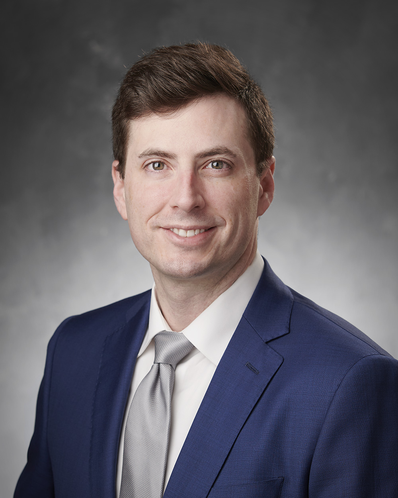

Independent, clinically grounded analysis for attorneys handling radiology malpractice matters, body imaging disputes, and emerging cases involving AI-assisted radiology error and misdiagnosis.

In radiology malpractice litigation, outcomes often hinge on nuanced questions involving visibility, perceptual error, differential diagnosis, reporting language, communication urgency, follow-up recommendations, and whether an imaging record supports the allegations being made.
My consulting practice is designed to help counsel understand the imaging evidence, the clinical context, and the radiologic standard of care with clarity, precision, and practical communication.
Artificial intelligence is increasingly integrated into radiology workflow through detection tools, triage algorithms, and decision-support systems. These technologies are beginning to appear in malpractice litigation, raising new questions about standard of care, responsibility, and diagnostic reliability.
Radiology malpractice matters often involve complex imaging interpretation, emerging AI-assisted workflow questions, and clinical decision issues. These resources help attorneys quickly understand key radiology concepts frequently involved in litigation.
Designed for firms that value responsive communication, careful record analysis, and testimony-ready explanations of complex radiology issues.
Sophisticated early case assessment for counsel evaluating liability exposure, standard-of-care questions, imaging chronology, and case viability before major litigation spend.
Comprehensive review of imaging, reports, timelines, communication pathways, follow-up recommendations, and clinical context to identify the issues most likely to matter in deposition, mediation, and trial.
Independent, clearly reasoned opinions regarding radiologic interpretation, workflow, communication, causation considerations, and whether conduct aligned with accepted practice.
Targeted assistance for preparing examinations, evaluating opposing expert positions, stress-testing themes, and refining technically accurate lines of questioning.
High-level support for exhibit selection, demonstrative planning, imaging explanation, chronology development, and presentation of complex radiology issues to judges and juries.
Discreet physician-to-counsel collaboration with responsiveness, professionalism, and a premium standard of communication appropriate for complex, high-value matters.
Dr. David J. Lerner is a board-certified diagnostic radiologist with approximately 10 years of active clinical practice and extensive experience interpreting high volumes of complex medical imaging. His subspecialty focus is Body Imaging / Abdominal Imaging, with daily practice across CT, MRI, ultrasound, and general radiography.
Dr. Lerner previously served as Assistant Professor of Radiology at the University of Washington School of Medicine and as Assistant Professor of Radiology at the University of Missouri–Kansas City School of Medicine. In these roles he participated in clinical teaching, research, and physician education while maintaining a high-volume clinical imaging workload.
He completed fellowship training in Abdominal / Body Imaging at the prestigious Mallinckrodt Institute of Radiology at Washington University in St. Louis. He completed residency at the University of Missouri–Kansas City School of Medicine, earned his medical degree from the University of Kansas School of Medicine, and received his undergraduate degree from Rutgers University.
Dr. Lerner has received multiple awards for education and research and has been involved in aerospace-related medical and imaging projects, including collaborations connected to organizations such as NASA, SpaceX, and CNES. He is also a Fellow of the Aerospace Medical Association.
A core strength of Dr. Lerner's consulting work is his ability to clearly explain complex radiologic findings and diagnostic decision-making to non-radiologists, attorneys, judges, and juries. His consulting practice focuses primarily on radiology malpractice matters, including Radiology AI Error & Misdiagnosis Review, requiring careful imaging analysis, chronology review, and clear explanation of radiologic standards of care.
Download a full curriculum vitae or a concise one-page expert profile for attorney review.
If a button does not open in your browser, right-click and choose “Open link in new tab” or “Save link as.”
Dr. Lerner has participated in aerospace medical imaging research involving NASA, SpaceX, and other space medicine collaborators. His work includes imaging capability development for exploration-class missions and participation in research involving the first X-ray imaging experiments performed in space.